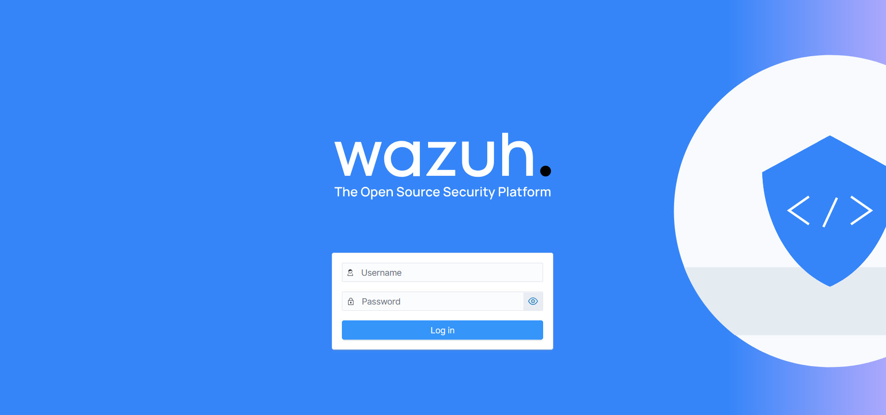
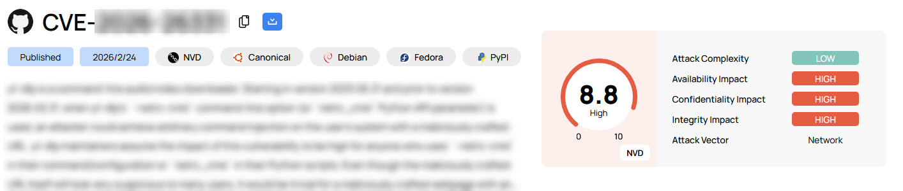
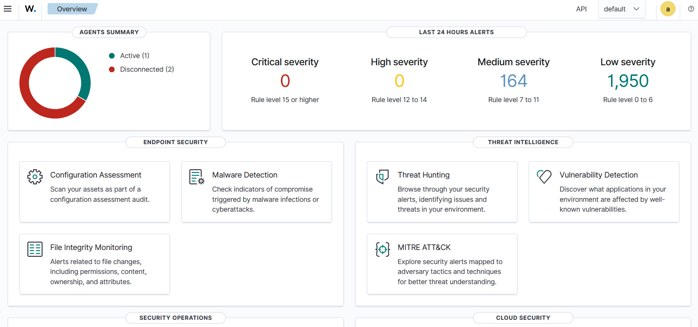

Self-Hosting a SIEM Dashboard
Role: Security Engineer / SOC Analyst (Home Lab)
Tools: Cybsecurity SOC Ubuntu Server Virtualization Wazuh
Project Overview
In order to simulate an enterprise security operations environment and apply cybersecurity concepts, I installed and self-hosted a SIEM dashboard in my home technology lab. I enrolled multiple machines from my network into a centralized Wazuh manager — just as a SOC analyst would monitor a diverse fleet of corporate machines. By deliberately choosing endpoints - or "agents" - with different operating systems, hardware profiles, and usage patterns, I was able to generate varied, realistic security telemetry and practice a full cybersecurity analyst workflow: detection, triage, remediation, and reporting.
With three active agents producing continuous event data, I could observe how security postures differ across operating system families, map observed behaviors, and benchmark each endpoint against industry compliance frameworks — all from a single dashboard. I limited the initial number of agents to ensure a manageable amount of data. Three machines from my home network were enrolled as Wazuh agents — including physical laptops and a production-style virtual server - to represent the variety of machines found at a company.
This project involved configuring a containerized security architecture including the Wazuh Indexer, Manager, and Dashboard. Using several AI models as a learning partner, I successfully deployed a full-stack Wazuh SIEM dashboard within a virtualized Ubuntu server instance on a Windows host (using VMWare). After deployment, I performed comprehensive vulnerability assessments and triage across a multi-platform lab (Windows 10, Ubuntu Server, and Linux Mint).

Enterprise Vulnerability Triage
I used the SIEM dashboard to conduct a deep-dive analysis of the three agent hosts. After the successful deployment of Wazuh, I immediately began receiving detailed information on my network. At first I was alarmed at how many notifications I received. However, using AI as a learning partner to augment my cybersecurity certifications and training, I quickly began to learn the difference between theoretical analysis and what takes place when working with machines generating actual data - especially in my own network. My goal was to move beyond "scan and patch" and into professional risk categorization.
CVE Pattern Analysis
I began by trianging and prioritizing vulnerabilities. I discovered that the majority were kernel-level vulnerabilities published within 14 days of the assessment, representing the "Patching Gap" where official vendor updates were not yet available.
The Triage Framework
- Vendor-Pending: Acknowledged vulnerabilities awaiting official patch release.
- Deferred/Ignored: Older vulnerabilities deferred by the vendor due to stability risks.
- Targeted Remediation: Specific fixes requiring manual installation outside of general upgrades.

Threat Hunting & Alert Analysis
Using Wazuh's Threat Hunting module, I monitored real-time event streams across all agents. The dashboard surfaced alert groups spanning syslog, authentication events, rule triggers, configuration change detections, and systemd activity. Events were correlated against PCI DSS requirements, giving each alert a compliance context alongside its technical one.
The Vulnerability Detection module scanned all enrolled agents and surfaced a combined picture of the environment's CVE exposure. Across the lab, a variety of potential vulnerabilities were identified. The practical challenge was not just finding them, but reasoning about what to do with each category.
I quickly learned that a raw vulnerability count means little without context. The most important insight from this project was that a high number of "High" findings is not automatically a sign of poor maintenance — it often reflects the Patching Gap: the window between when a CVE is published and when a vendor releases an official fix. Learning this distinction was fundamental to my objective of creating a simulated cybersecurity environment where I could apply real-life concepts.
